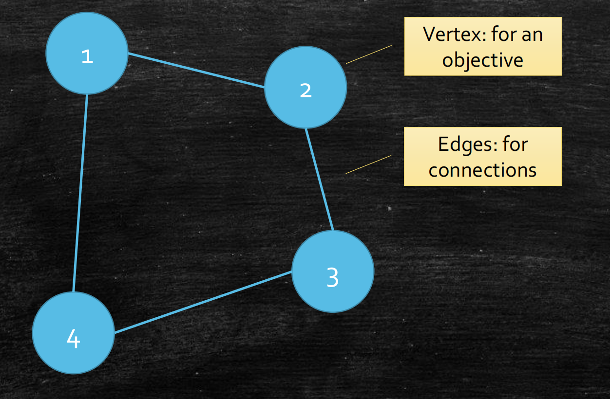
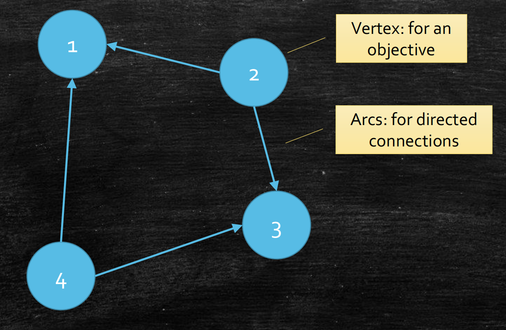
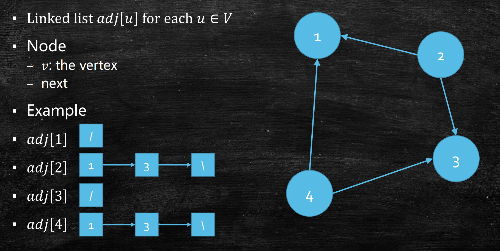
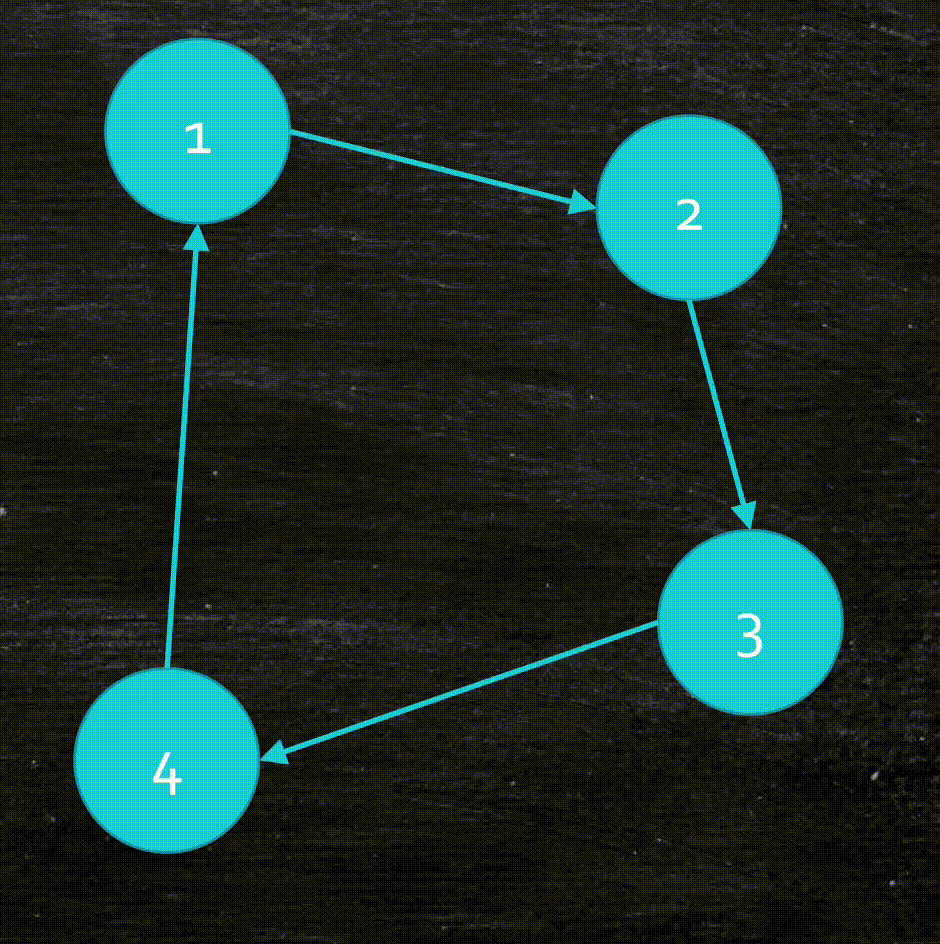
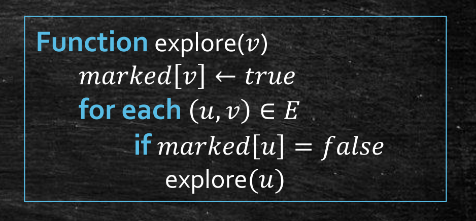
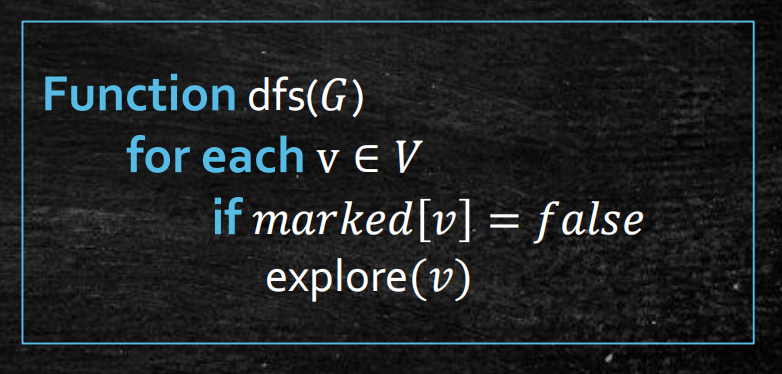
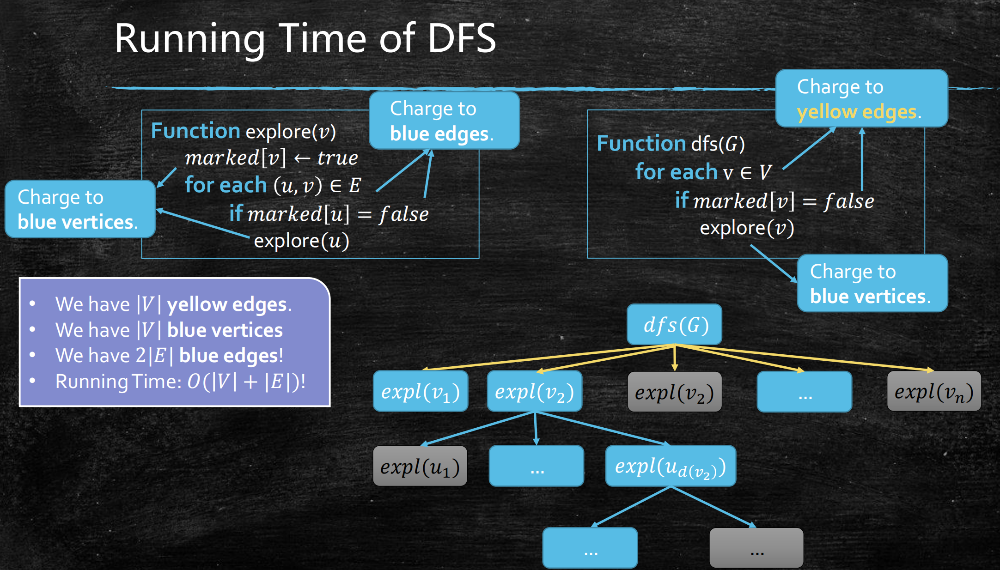

图(1)：DFS及其应用
本文以图的基础算法——深度优先搜索（DFS） 为核心，探讨了其在求连通分量、检查是否有环、拓扑排序、求强连通分量等问题中的应用。
我们正式进入到图算法的章节，让我们先复习一下图的基础知识。
图的基础知识复习
如果你有良好的离散数学和数据结构基础，可以跳过这一部分。
图的逻辑结构
图分为无向图和有向图。
- 无向图由顶点和边构成。边表示我们既可以从到，也可以从到。
- 有向图由顶点和弧构成。弧表示我们只能从到。


从定义可以看出，无向图其实是一种特殊的有向图，因为边就相当于弧加弧。那么一个有向图最多有多少条弧呢？不难想象，当每两个顶点间都有两条弧的时候，弧的数量最多，为。
图的存储结构
图可以用邻接矩阵或邻接表储存。
- 邻接矩阵：把图存储为一个的矩阵，其中
显然，存储邻接矩阵需要的空间为。
- 邻接表：对于每个顶点，我们在顶点表中存储一个链表，这个链表包含了的所有相邻结点。由于我们要在顶点表中存储个顶点，用个链表结点存储条弧，因此邻接表需要的空间为。

深度优先搜索（DFS）
图中有两大基本性质：
- 可达性：能否从一个顶点走到另一个顶点。
- 连通分量：在无向图中，指顶点间两两可达的的极大子图。“极大”是说再加入任何一个顶点，都会不满足顶点间两两可达。
关于有向图的连通分量概念，我们会在后文中提及。
可达性问题
让我们先来关注可达性问题，即给定一个以邻接表存储的图和一个顶点，要求所有从出发能到达的顶点。
探索算法设计
这应该如何思考？我们有如下观察：
- 首先，如果在的邻接表中，那么是可达的。
- 其次，如果是可达的，的邻接表中的顶点也是可达的。
那么，我们就可以考虑一个递归的探索过程，即先从开始探索，对每一个在的邻接表中的顶点，探索。这样就可以探索到所有从出发能到达的顶点。
这个算法有没有问题呢？请你考虑当图中出现了环的情况。

这时，我们的算法可能陷入死循环，因为它会不断重复地探索已经探索过的顶点。
事实上，这个算法无法完成用归纳法正确性证明，原因是每次的问题规模没有缩小，即要探索的顶点数没有减少。
为了避免探索已经探索过的顶点，我们应该怎么做？最简单的想法是，对已经到达过的顶点做标记，被标记过的顶点不再探索。这样，我们就有了如下的改进算法。

可以发现，在函数执行完后，所有被标记的顶点都是可达的，从而我们得到了一个含有的连通分量（无向图中）！
从探索算法到DFS
那么，如果我们想知道整个图中所有的连通分量呢？此时我们就需要搜索整张图。不难想到，我们可以遍历所有顶点，从每个未探索过的顶点开始探索。这样每一次完整的探索，都对应了一个连通分量。这就是深度优先搜索（DFS）算法。

时间复杂度分析
DFS算法的时间复杂度似乎是一个棘手的问题。有一种思路是，函数会被执行次，每次执行会遍历该顶点相邻的所有边。
- 若采用邻接矩阵，每次找一个顶点相邻的所有边需要检查全部顶点，时间复杂度为，因此DFS的总时间复杂度为。
- 若采用邻接表，整体上来看每条边会被检查常数次（无向图2次/有向图1次），时间复杂度为，因此DFS的总时间复杂度为。
在这里，我们还可以使用之前介绍的负责论证（charging argument） 的思路来思考。

求连通分量
求连通分量
检查是否有环
拓扑排序
求强连通分量
注：本文中所有图片均来自张宇昊老师的课程PPT。